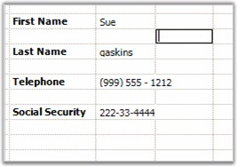

The MaskedEdit cell type lets you to edit and display specially formatted text cells that conform to an edit mask that you specify. To make use of this cell type, set the CellType property to MaskedEdit. You can set additional properties like Mask, ClipMode, and so on, through the cell style's GridMaskEditInfo object. The various options will allow you to input masks to control the type of input that is valid within a cell. For example, you can use a MaskedEdit cell to facilitate the entry of a formatted Social Security number, a phone number, or a 3 character alpha-code.
The following code example illustrates how to set the cell type to MaskedEdit.
|
[C#]
gridControl1[2, 3].Text = "First Name"; GridStyleInfo style1 = gridControl1[2, 4]; GridMaskEditInfo maskedEditStyle1 = style1.MaskEdit; gridControl1[4, 3].Text = "Last Name"; gridControl1[8, 3].Text = "Social Security"; GridStyleInfo style4 = gridControl1[8, 4]; GridMaskEditInfo maskedEditStyle4 = style4.MaskEdit;
// Masked Edit Box 1 style1.CellType = "MaskEdit"; maskedEditStyle1.AllowPrompt = false; maskedEditStyle1.ClipMode = Syncfusion.Windows.Forms.Tools.ClipModes.ExcludeLiterals; style1.CultureInfo = new System.Globalization.CultureInfo("en-US"); maskedEditStyle1.DateSeparator = '-'; maskedEditStyle1.Mask = ">C<CCCCCCCCCCCC"; style1.MaxLength = 13; style1.AutoSize = true; maskedEditStyle1.SpecialCultureValue = Syncfusion.Windows.Forms.Tools.SpecialCultureValues.None; maskedEditStyle1.UseLocaleDefault = false; maskedEditStyle1.UseUserOverride = true;
// Masked Edit Box 4 style4.CellType = "MaskEdit"; maskedEditStyle4.AllowPrompt = false; maskedEditStyle4.ClipMode = Syncfusion.Windows.Forms.Tools.ClipModes.IncludeLiterals; style4.CultureInfo = new System.Globalization.CultureInfo("en-US"); maskedEditStyle4.DateSeparator = '-'; maskedEditStyle4.Mask = "999-99-9999"; style4.MaxLength = 11; maskedEditStyle4.SpecialCultureValue = Syncfusion.Windows.Forms.Tools.SpecialCultureValues.None; style4.Text = "___-__-____"; maskedEditStyle4.UseLocaleDefault = false; maskedEditStyle4.UseUserOverride = true; |
|
[VB.NET]
gridControl1(2, 3).Text = "First Name" Dim style1 As GridStyleInfo = gridControl1(2, 4) Dim maskedEditStyle1 As GridMaskEditInfo = style1.MaskEdit gridControl1(4, 3).Text = "Last Name" gridControl1(8, 3).Text = "Social Security" Dim style4 As GridStyleInfo = gridControl1(8, 4) Dim maskedEditStyle4 As GridMaskEditInfo = style4.MaskEdit
' Masked Edit Box 1 style1.CellType = "MaskEdit" maskedEditStyle1.AllowPrompt = False maskedEditStyle1.ClipMode = Syncfusion.Windows.Forms.Tools.ClipModes.ExcludeLiterals style1.CultureInfo = New System.Globalization.CultureInfo("en-US") maskedEditStyle1.DateSeparator = "-"c maskedEditStyle1.Mask = ">C<CCCCCCCCCCCC" style1.MaxLength = 13 style1.AutoSize = True maskedEditStyle1.SpecialCultureValue = Syncfusion.Windows.Forms.Tools.SpecialCultureValues.None maskedEditStyle1.UseLocaleDefault = False maskedEditStyle1.UseUserOverride = True
' Masked Edit Box 4 style4.CellType = "MaskEdit" maskedEditStyle4.AllowPrompt = False maskedEditStyle4.ClipMode = Syncfusion.Windows.Forms.Tools.ClipModes.IncludeLiterals style4.CultureInfo = New System.Globalization.CultureInfo("en-US") maskedEditStyle4.DateSeparator = "-"c maskedEditStyle4.Mask = "999-99-9999" style4.MaxLength = 11 maskedEditStyle4.SpecialCultureValue = Syncfusion.Windows.Forms.Tools.SpecialCultureValues.None style4.Text = "___-__-____" maskedEditStyle4.UseLocaleDefault = False maskedEditStyle4.UseUserOverride = True |

Figure 83: Masked Edit Cells